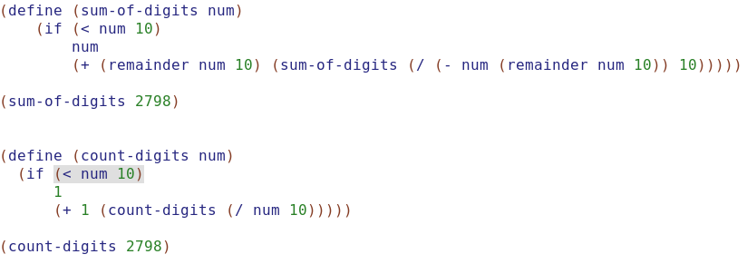
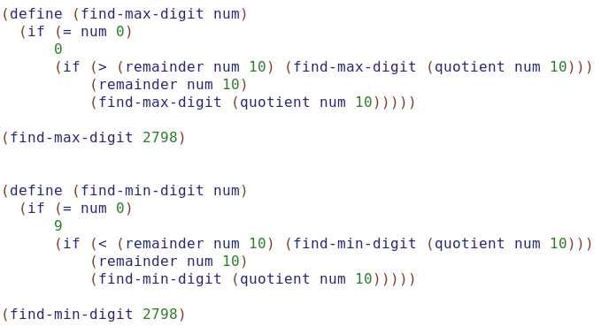
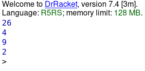

Лабораторна робота 2. Використання рекурсії для організації повторювальних процесів
Завдання:
Написати процедури, що обчислюють задану функцію за допомогою рекурсивного процесу. Продемонструвати застосування звичайної та хвостової рекурсії.
Варіант 5. Для заданого числа визначити рекурсивні процедури для обчислення суми та кількості його цифр, максимальної та мінімальної цифри. Визначити рекурентні співвідношення та глибину рекурсії.
Алгоритм програми:
Обчислення суми:
- Створити визначення функції
- Повернути передане число, якщо передане число менше 10
- (+ (remainder num 10) (sum-of-digits (/ (- num (remainder num 10)) 10))) - це значення, яке потрібно повернути в іншому випадку
Обчислення кількості цифр:
- Створити визначення функції
- 1 - значення, яке потрібно повернути, коли передане число менше 10
- 1 + count-digits(n / 10) - це значення, яке потрібно повернути в іншому випадку
Обчислення максимальної цифри:
- Створити визначення функції
- Рекурсивний принцип такий: з урахуванням "списку" значень, якщо я можу зробити щось до першого елементу у "списку" стосовно решти списку, я можу це зробити для всього списку
- У цьому полягає рекурсивний алгоритм. Знайти найбільший перший елемент у "списку чисел" та найбільший із решти "списку"
Обчислення мінімальної цифри:
- Створити визначення функції
- Рекурсивний принцип такий: з урахуванням "списку" значень, якщо я можу зробити щось до першого елементу у "списку" стосовно решти списку, я можу це зробити для всього списку
- У цьому полягає рекурсивний алгоритм. Знайти найменший перший елемент у "списку чисел" та найменший із решти "списку"
Код програми:


Скрін-шот результатів:

Висновки:
Під час виконання лабораторної роботи були вивчені способи використання рекурсії для організації повторювальних процесів на мові Scheme. Було реалізовано програму, яка для заданого числа за допомогою рекурсивного процесу розраховує суму та кількість цифр, максимальну та мінімальну цифри.